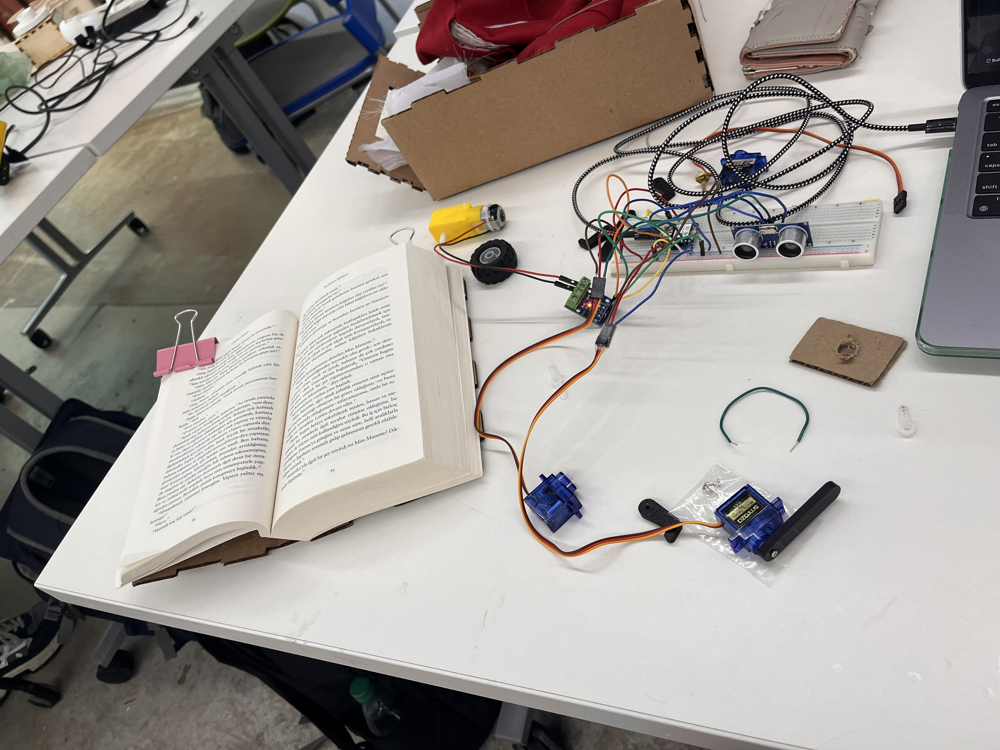
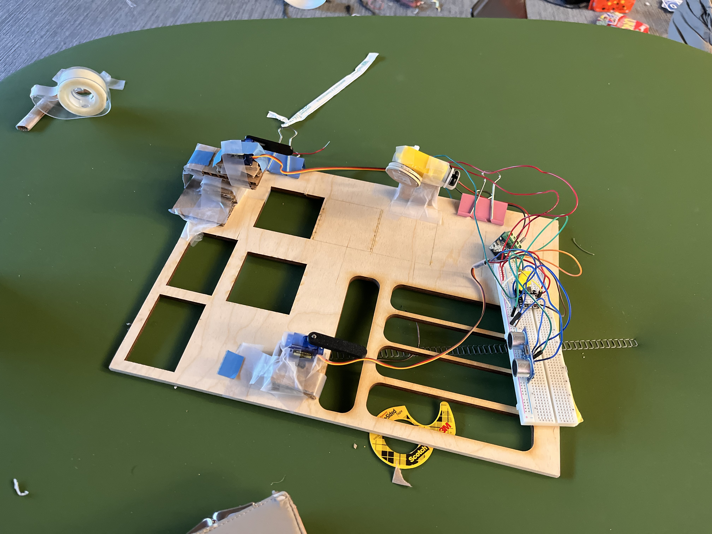
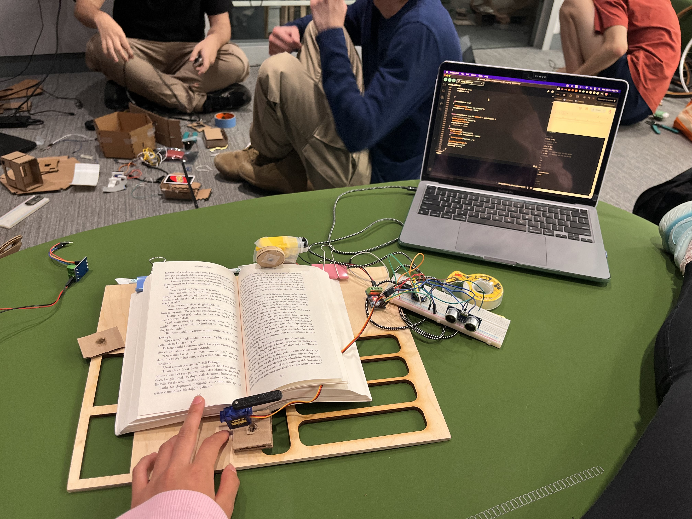
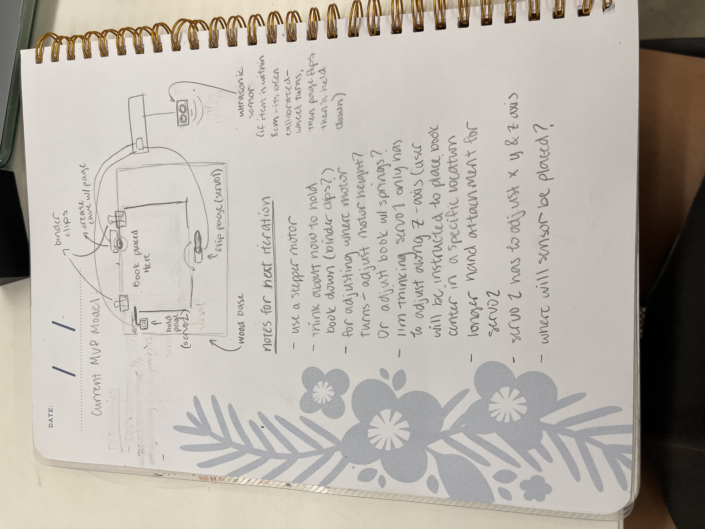
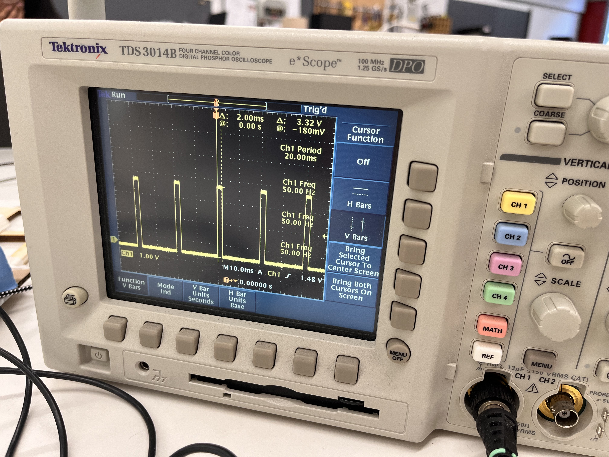

<div class="textcontainer">
<p class="margin"> </p>
<h3>Week 7: Electronic Outputs</h3>
<h4>Minimum Viable Product for Final Project: Page Turner</h4>
<p class = "margin"></p>
For this project I made my MVP project for my book stand. I decided to isolate the main purpose of the stand which is to turn pages at the swipe of a hand, which could be used among those who have mobility problems, and with people who are like me (I love eating while I read).
<p class = "margin"></p>
<iframe width="560" height="315" src="https://www.youtube.com/embed/2IO8QDJK5k4?si=7SEGoBaj72mr6r85" title="YouTube video player" frameborder="0" allow="accelerometer; autoplay; clipboard-write; encrypted-media; gyroscope; picture-in-picture; web-share" referrerpolicy="strict-origin-when-cross-origin" allowfullscreen></iframe>
<p class = "margin"></p>
Initially, I worked for a while just on coding the motor and servos to work and move only when I swiped my hand closer than 8 cm to the ultrasonic sensor. Once I coded them to respond to the ultrasonic sensor, I coded a clock to run during the program so I wouldn't have to use delays, especially because I want my two servos to operate at the same time. Afterwards I coded the motor to run while my hand was in front of the sensor plus 1 second after to ensure the page turns fully, then the servo was programmed to run immediately following the motor's stop so the pages would be flipped, then programmed a second servo to catch the pages to keep them in place. Below is my what my inital setup looked like while coding.
<p class = "margin"></p>
<p></p>
<p class = "margin"></p>
After coding everything to my desired timing and effect I began to tape everything down with cardboard pieces I cut out (I decided having stands/holders for the motors and servos wouldn't be ideal since in my final project everything should be able to move because the dimensions of books vary from one to the other).
<p class = "margin"></p>
<p></p>
<p class = "margin"></p>
I did have to play around with the positions of everything including length of wires since they needed to extend further than anticipated. Scotch tape became my best friend allowing me to test different heights, angles, and positions.
<p class = "margin"></p>
<p></p>
<p class = "margin"></p>
Eventually I secured everything on the wood and wrote down some improvements I would love to make, such as a longer hand for the stopping servo since it wouldn't always catch the pages, in what axes I wanted the servos to be able to move, and other aspects I might want to add as shown below.
<p class = "margin"></p>
<p></p>
<p class = "margin"></p>
Some issues I ran into while coding this was that the servo would constantly run while the motor ran because the function had it going step by step. To fix that I created multiple booleans that would only render true when one function (like the motor running) would stop, then a while statement for the next function to run since a while statement makes sure nothing else is happening and waits for the function to finish before moving on. Additionally in the code I added a toTargetSlow() and a ReturnFast() that turned the servo faster and immediately rather than step by step.
<p class = "margin"></p>
<pre><code>
int switchServoPin = D4;
int switchServoPin2 = D5;
// defines pins numbers
const int trigPin = D0;
const int echoPin = D1;
const int A1A = D2; // define pin 12 for A-1A
const int A1B = D3; // define pin 14 for A-1B
// defines variables
long duration;
float distance;
float current;
float prevTime;
float stopTime;
bool motorStop;
unsigned long servoReturn;
bool pageTurnDone;
class pageTurnerServos{
Servo servo;
int pos;
int increment;
int updateInterval;
unsigned long lastUpdate;
int startPos;
int endPos;
public:
pageTurnerServos(int interval, int start, int target){
updateInterval = interval;
increment = -1;
startPos = start-1;
pos = startPos;
endPos = target;
}
void Attach(int pin){
servo.attach(pin);
servo.write(startPos);
}
void Detach(){
servo.detach();
}
void toTarget(){
/*if((millis() - lastUpdate) > updateInterval && pos != endPos){
lastUpdate = millis();
pos += increment;
servo.write(pos);
}*/
servo.write(endPos);
pos = endPos;
}
void toTargetSlow(){
if((millis() - lastUpdate) > updateInterval && pos != endPos){
lastUpdate = millis();
pos += increment;
servo.write(pos);
}
//servo.write(endPos);
//pos = endPos;
}
void Return(){
//servo.write(startPos);
//pos = startPos;
if((millis() - lastUpdate) > updateInterval && pos != startPos){
lastUpdate = millis();
pos -= increment;
servo.write(pos);
}
}
void ReturnFast(){
servo.write(startPos);
pos = startPos;
}
};
//Switch mainSwitch(switchPin);
pageTurnerServos switchServo(15, 160, 0);
pageTurnerServos switchServo2(15, 180, 0);
void setup() {
motorStop = false;
pageTurnDone = false;
switchServo.Attach(switchServoPin);
switchServo2.Attach(switchServoPin2);
Serial.begin(9600);
prevTime = 0;
pinMode(trigPin, OUTPUT); // Sets the trigPin as an Output
pinMode(echoPin, INPUT); // Sets the echoPin as an Input
pinMode(A1A, OUTPUT); // specify these pins as outputs
pinMode(A1B, OUTPUT);
digitalWrite(A1A, LOW); // start with the motors off
digitalWrite(A1B, LOW);
Serial.begin(9600); // Starts the serial communication
}
void loop() {
// Clears the trigPin
current = millis();
digitalWrite(trigPin, LOW);
delayMicroseconds(2);
// Sets the trigPin on HIGH state for 10 micro seconds
digitalWrite(trigPin, HIGH);
delayMicroseconds(10);
digitalWrite(trigPin, LOW);
// Reads the echoPin, returns the sound wave travel time in microseconds
duration = pulseIn(echoPin, HIGH);
// Calculating the distance
distance = duration * 0.034 / 2.0;
// Prints the distance on the Serial Monitor
Serial.print("Distance: ");
Serial.println(distance + .5);
if ((distance + .5) <= 8) {
stopTime = millis() + 1000;
}
if (current < stopTime) {
digitalWrite(A1A, LOW);
digitalWrite(A1B, HIGH);
}
else if (current >= stopTime && stopTime != -1) {
Serial.println("Stopping the Motor");
digitalWrite(A1A, LOW); // setting both pins LOW stops the motor
digitalWrite(A1B, LOW);
motorStop = true;
stopTime = -1;
}
if(motorStop == true)
{
Serial.println("Motor has stopped");
servoReturn = millis() + 3000;
}
while (motorStop == true && millis() < servoReturn) {
//switchServo.toTarget();
Serial.println("To Target");
switchServo.Return();
switchServo2.toTargetSlow();
pageTurnDone = true;
//motorStop = false;
}
if(pageTurnDone){
Serial.println("Returning");
switchServo2.ReturnFast();
while(millis()< (servoReturn + 1500))
{
Serial.println("Waiting...");
}
switchServo.toTarget();
pageTurnDone = false;
motorStop = false;
}
}
");
}
</code></pre>
<p class = "margin"></p>
Afterwards I hooked one of my servos up to the oscilloscope to observe the time domain at which my output device (servo) was operating, which was 20 ms. It was on a fixed clock becauase the signal repeats every 20 ms, and the speed/frequency was 50 Hz.
<p class = "margin"></p>
<p></p>
</div>